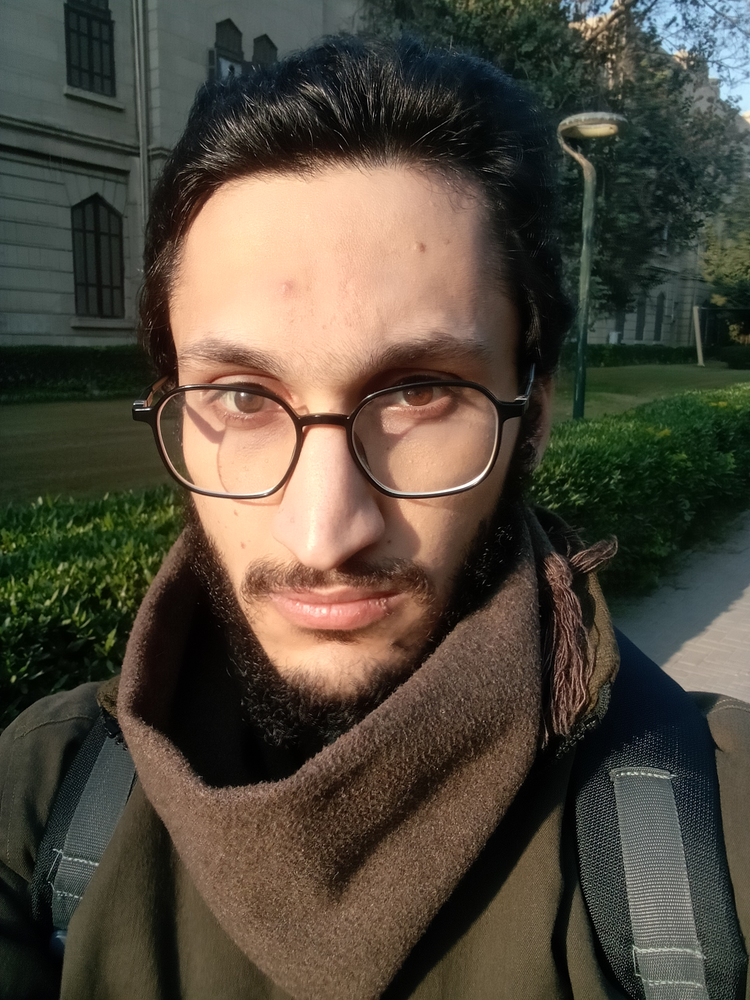

Welcome to my portfolio!
📍 Location: Cairo, Egypt
📄 Download Resume
🔗 LinkedIn
💻 GitHub

🧠 About Me
I am a Deep Learning Engineer passionate about AI, optimization, and computational intelligence. My work spans research, model development, and AI applications across medical imaging, computer vision, NLP, and robotics.
🧰 Skills
- Deep Learning & Machine Learning: PyTorch, TensorFlow, Scikit-learn, OpenCV
- Optimization & Computational Intelligence: SciPy, NumPy
- NLP & LLMs: Hugging Face, OpenAI, Retrieval-Augmented Generation (RAG)
- Computer Vision: Contrastive Learning, MAEs, Super-Resolution, Segmentation
- Databases & Deployment: PostgreSQL, MongoDB, Docker, Flask, FastAPI, Azure, AWS
- Robotics & 3D Modeling: MuJoCo, OpenAI-Gym, Gaussian Splatting, Point Clouds
- Programming Languages: Python, Java, C++
📚 Research & Publications
💼 Experience
🔹 AI Engineer @ Tanweer (07/2023 – 06/2024)
- Fine-tuned LLMs (RWKV-4) for English-Arabic translation.
- Reduced translation time from 8 hours to 30 seconds.
- Deployed AI pipelines on Google Cloud.
🔹 NLP Engineer Intern @ Siemens (09/2023 – 01/2024)
- Enhanced test case generation via LLMs.
- Used GCOV for code coverage optimization.
🚀 Projects
🔭 DeepLense (GSoC 2025 – Vision Foundation Model)
Goal: Detect gravitational lenses using masked feature extraction & super-resolution.
- Implemented Masked Autoencoders (MAE) for feature extraction.
- Achieved 99.67% AUC and 29.62 dB PSNR. 🔗 GitHub
- DeepLense
🦷 AI-Automated Dental Crown Generation (Graduation Project)
Goal: Segment teeth & generate 3D crowns using deep learning and geometric methods.
🏘️ 3D Interactive Virtual Estate (3DIVE)
Goal: Explore properties in 3D via camera pose estimation and Gaussian Splatting.
- Used Gaussian Splatting and SuGaR.
- Reconstructed environments from real estate videos.
🎮 Othello AI Game
Goal: Compete using heuristic & learning-based agents.
- Implemented Minimax & Alpha-Beta Pruning.
- Developed RL agent for strategy learning. 🔗 GitHub
- Othello AI
🦾 Synergy EMGs Proportional Control
Goal: Predict robotic hand motion from EMG data.
- Trained regression models on real EMG sensor signals.
- Enabled real-time robotic actuation. 🔗 GitHub
🚨 Real-Time Violence Detection
Goal: Detect violence in video streams using hybrid deep learning models.
👨🏫 Volunteering & Leadership
🏎️ Ain Shams University Racing Team (ASURT)
- Deep Learning Lead (2023 – Present)
- Built perception pipelines for autonomous vehicles.
- Created educational material for junior team members.
🤖 Machathon 4.0 (ASURT & STP)
- Built & raced autonomous cars using Python & C++.
- Participated in national-level ML & robotics competition.
🎓 Education
Ain Shams University (Senior - Computer & Systems Engineering)
📊 CGPA: 3.0 / 4.0
📍 Cairo, Egypt
⭐ Featured Repositories
🎯 Career Goals
🚀 Looking for opportunities in AI research, Computer vision, Robotics, medical imaging, and generative modeling.
Let’s collaborate on the future of deep learning and 3D intelligence.
📊 GitHub Stats


Designed with ❤️ by Waleed Alzamil